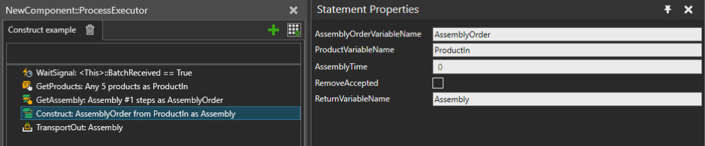

Creates an empty Assembly Instance and then fills it with the given products.
The given Assembly Order defines both the Assembly Product Type to create, and to which Pattern Slots the Product Instances are placed into. The products are placed into Pattern Slots in the correct assembly order, and the Pattern Slot Product Type filters must accept the Product Instances.
The Construct statement is not intended for creating empty Assembly Instances, so at least one Product Instance must be successfully placed into the created Assembly Instance.
The Construct statement can optionally use linear motion to move the given products to their assigned positions in the created Assembly Instance. Duration of the motion is controlled by the AssemblyTime property and can be used to roughly simulate time taken by assembly operations or just for visualization purposes.

| Name | Description |
AssemblyOrderVariableName |
Name of the Process variable storing the Assembly Order that defines the assembly to create. |
ProductVariableName |
Name of the Process variable where to get the Product Instances that will be placed into the assembly. |
AssemblyTime |
An expression for a time in seconds used for moving the Product Instances to correct positions in the assembly. Must evaluate to an Integer or Real with 0 or positive value. |
RemoveAccepted |
Defines whether Product Instances accepted into the assembly are removed from the input products variable. |
ReturnVariableName |
Name of the process variable to use for storing the result. |